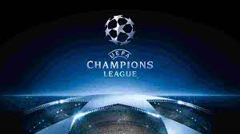
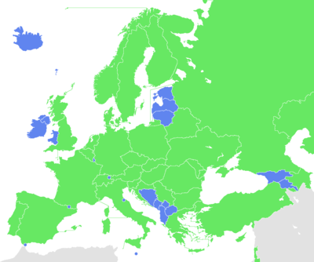
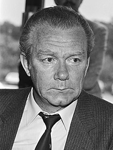
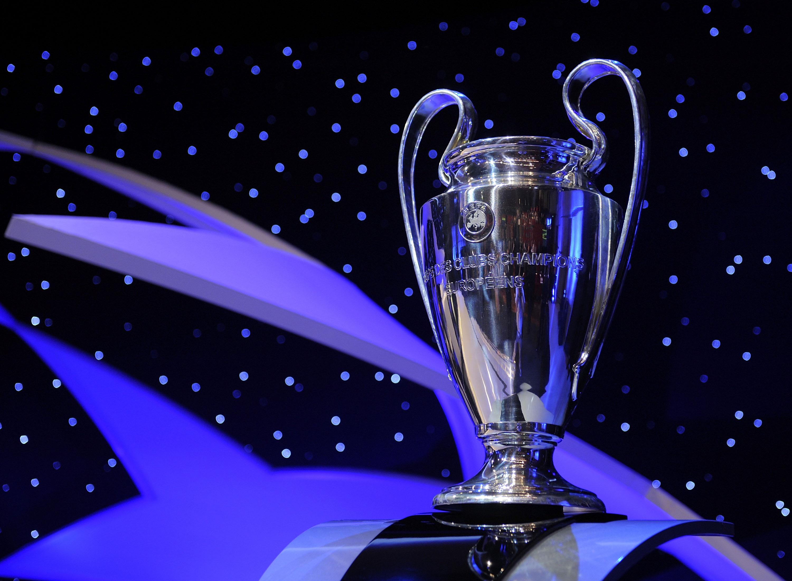

Ліга чемпіонів УЄФА
Зміст
Історія
Дебютний розіграш найпрестижнішого європейського клубного трофею стартував через місяць після першого Конгресу УЄФА, який відбувся 2 березня 1955 року у Відні.
Цікаво, що ідея організації Кубка чемпіонів народилася аж ніяк не в самому футбольному союзі.
Тоді як члени новоутвореного футбольного союзу зосередилися на створенні міжнародних змагань за участю збірних, редактор французької спортивної газети L'Equipe Габріель Ано висловив ідею щодо організації клубного турніру континентального розмаху.
Матчі нового кубка Ано разом із колегою Жаком Ферраном запропонували проводити посеред тижня — у середу ввечері.
За правилами, що були обговорені організаторами на початку, заявляти на змагання виключно чемпіонів країн було зовсім не обов'язково — L'Equipe вважала, що до них вигідніше долучати найпопулярніші клуби.
Шістнадцять учасників дебютного розіграшу нового турніру цю пропозицію одностайно підтримали на зібранні в Парижі 2—3 квітня 1955 року.
Отже, 4 вересня у стартовій грі в Лісабоні «Спортінг» і «Партизан» розійшлися миром — 3:3, а в матчі-відповіді в Белграді перемогу з рахунком 5:2 святкували югослави, які й кваліфікувалися до наступного раунду.
Перші п'ять трофеїв дісталися мадридському «Реалу».
Іншим клубам пізніше також вдавалися вражаючі серії — «Аякс» і «Баварія», наприклад, вигравали «кубок з великими вухами» тричі поспіль.
Утой же час говорити про чиєсь довгострокове домінування в найпрестижнішому єврокубку все-таки не варто.
Так, на свій четвертий титул після ударного відрізку на початку 1970-х амстердамці чекали 22 роки.
А перемога «Реала» в 1998-му стала першим тріумфом мадридців після 32-річної паузи.
Мюнхенці ж, здобувши перемогу над «Валенсією» у фінальній серії післяматчевих пенальті сезону — 2000/01, перервали 26-річне очікування четвертого трофею.
Окремої згадки, напевне, заслуговують і чотири перемоги «Ліверпуля» в період з 1977 по 1984 роки, тому що всі вони були здобуті чотирма практично різними складами.
У 2005 році червона ліверпульська зірка знову зійшла на європейському небосхилі.
У неймовірному за напруженням вирішальному поєдинку проти італійського «Мілана» англійці зуміли відіграти три м'ячі, а в серії післяматчевих пенальті схилили шальки терезів на свій бік.
Найбільш титулованими командами в історії Ліги чемпіонів УЄФА є «Реал», «Мілан» та «Барселона».
З урахуванням підкорених Кубків чемпіонів скарбничка «Реала» вже містить тринадцять титулів.
Другим із сімома перемогами залишається «Мілан», в активі «Ліверпуля» та «Баварії» — шість тріумфів, у «Барселони», що тріумфувала в 2015 році — п'ять. «Мілан» свій останній трофей виграв у кампанії-2006-2007.
Пам'ятною є перемога «Мілана» в сезоні 2002—2003: розпочавши турнірний шлях з третього раунду кваліфікації, міланський клуб завершив його післяматчевими пенальті у двобої проти «Ювентуса».
До речі, вирішальний післяматчевий пенальті на манчестерському «Олд Траффорд» забив саме Андрій Шевченко.
Переломним моментом у розвитку найпрестижнішого клубного змагання зазвичай вважають сезон — 1992/93, коли на зміну Кубку чемпіонів прийшла Ліга чемпіонів.
У її розіграші до традиційних раундів плей-оф додався осінній груповий етап, який було випробувано роком раніше.
Зростання популярності цих змагань призвело до того, що поступово кількість учасників основної сітки зросла з 8 до 32.
Матчі Ліги чемпіонів проводяться по вівторках і середах.
Регламент турніру
Турнір складається з трьох етапів: кваліфікації, який в свою чергу має три кваліфікаційні раунди і раунд плей-оф; групового етапу - вісім груп по чотири клуби і плей-оф, де шістнадцять найкращих команд виявляють переможця Ліги в фінальному матчі.
Кваліфікація
На стадії кваліфікації команди грають за кубковою системою на вибування.
В турнірі є чотири відбіркові раунди (включаючи раунд плей-оф), що являють собою двоматчеві поєдинки, тобто гру вдома й на виїзді. За результатами визначаються останні 10 з 32 учасників групового етапу. У основну сітку ведуть два шляхи: «Шлях чемпіонів» або «Шлях нечемпіонів».
«Шлях чемпіонів»: Перший відбірковий раунд складається з двох двоматчевих поєдинків, в яких беруть участь чемпіони країн, що займають з 50-го по 53-і місця в рейтингу УЄФА. Переможці виходять в другий відбірковий раунд, де їх чекають чемпіони 32 країн УЄФА, які займають місця, що займають в рейтингу, з 17-го по 49-х (окрім Ліхтенштейну). Сімнадцять сильних клубів в третьому відбірковому раунді об'єднуються з переможцями національних асоціацій з місцями в рейтингу від 14-го до 16-го. Потім десять переможців зустрічаються в раунді плей-оф. Двоматчеві дуелі із зустрічами вдома і на виїзді визначать ще п'ятеро учасників групового етапу Ліги чемпіонів.
«Шлях нечемпіонів»: національна асоціація, що займає шосте місце в рейтингу УЄФА, делегує в третій відбірковий раунд третього призера свого чемпіонату. Сюди ж потрапляють срібні призери національної першості країн, які займають в рейтингу УЄФА місця з сьомого по п'ятнадцяте. П'ять переможців отримують пропуск в раунд плей-оф, де їх чекатимуть команди, що зайняли четверті місця в чемпіонатах трьох сильних асоціацій згідно з рейтингом УЄФА, а також володарі бронзових медалей національної першості країн, що займають четверте і п'яте місця в рейтингу УЄФА.
Учасники «Шляху чемпіонів» і «Шляху нечемпіонів» не можуть перетнутися в кваліфікації Ліги чемпіонів.
Команди, що поступилися в третьому відбірковому раунді Ліги чемпіонів, продовжують боротьбу в раунді стикових матчів Ліги Європи УЄФА.
Клуби, які програли в стикових матчах Ліги чемпіонів, попадуть в груповий етап Ліги Європи УЄФА.
Груповий етап
У груповому раунді команди розподіляються по групах, в кожній з яких грають чотири команди. Кожен клуб грає по два матчі з усіма командами своєї групи.
У груповий етап автоматично потрапляють 22 клуби (21 плюс діючий переможець). Три національні асоціації з найвищим коефіцієнтом у рейтингу УЄФА делегують безпосередньо по три клуби. Національні асоціації, що займають в рейтингу місця з четвертого по шосте, отримають дві автоматичні путівки в основну сітку турніру, тоді як асоціації, що розмістилися з сьомого по дванадцяте місця, лише одну.
Команди, що посіли 1-е і 2-е місце у своїх групах, продовжують боротьбу в 1/8 фіналу Ліги чемпіонів.
Команди, що посіли треті місця у своїх групах у груповому етапі Ліги чемпіонів, продовжують боротьбу в 1/16 фіналу Ліги Європи. Чотири клуби з найкращими показниками з їх числа є сіяними в жеребкуванні 1/16 фіналу Ліги Європи нарівні з переможцями груп Ліги Європи.
Плей-оф
На стадії плей-оф команди грають за кубковою системою по два матчі. Плей-оф починається з 1/8 фіналу і закінчується фіналом, який складається з одного матчу.
Фінал, який проводиться на попередньо визначеному полі, грається в суботу і починається о 20:45 за центральноєвропейським часом. Зазвичай це поле є нейтральним для обох клубів, однак мали місце й винятки: фінал може пройти на домашній арені клубу, який до нього дістався. Таким був, наприклад, фінал Ліги чемпіонів 2012—2013, який відбувся на домашньому стадіоні команди-учасниці фіналу — мюнхенської «Баварії».
Українські клуби в Лізі чемпіонів
Незалежна Україна
Нова історія українського футболу почалася у 1992 році, коли сімферопольська «Таврія» перемогла у чемпіонаті й вийшла до Ліги чемпіонів.
Спочатку обіграла «Шелбурн», але далі зазнала поразки від швейцарського «Сьйону».
Часи «Динамо»
Далі нашу країну в єврокубках захищало «Динамо». Але у першому раунді вони поступилися каталонській «Барселоні» за сумою двох матчів. Кияни виступали і в наступному сезоні Ліги чемпіонів. Вони пройшли кваліфікацію, але зайняли останнє місце в групі. Далі київський клуб знову пройшов кваліфікацію сезону 1995/96, перемігши «Ольборг». Але через дискваліфікацію не зіграли у наступному етапі.
У сезоні 1996/97 не подолали кваліфікацію. Зате у наступному сезоні прорвалися до групового етапу і зайняли перше місце. Але у чвертьфіналі поступилися «Ювентусу». Валерій Лобановський збудував неймовірно сильний склад на наступний сезон. І вже в кваліфікації з рахунком 10:1 за сумою двох матчів «Баррі Таун» вилетів з турніру. А у другому кваліфікаційному раунді «Спарта» довела ситуацію до серії пенальті, де українці перемогли. Далі вийшли з 1 місця у наступну стадію. Перемогли «Реал», але у півфіналі програли. Встановлено рекорд українських клубів у Лізі чемпіонів.
У наступному сезоні динамівці пройшли 1 груповий етап, посівши 2 місце, але у наступному груповому етапі зайняли 3 позицію, програвши «Реалу» в кількості забитих і пропущених м'ячів.
2000—2010
У сезоні 2000/2001 до київського «Динамо» приєднався і «Шахтар». Він добре пройшов кваліфікацію. А у групі посів 3 місце, вийшовши в Кубок УЄФА. «Динамо» ж закінчило свій шлях на 4 місці.
Сезон 2001/2002. «Шахтар» вибув у 3-му кваліфікаційному раунді, а біло-сині знову на 4-й сходинці. Але фінал турніру розпочався з хвилини мовчання в честь Валерія Васильовича Лобановського. Наступний сезон. «Динамо» проходить кваліфікаційний раунд і займає 3 позицію у групі, на відміну від «гірників», які програли в серії пенальті.
Сезон 2003/2004. «Динамо» знову не проривається до наступної стадії. А помаранчево-чорні не проходять кваліфікацію.
2004/2005. Обидва проходять кваліфікацію і вибувають, зайнявши 3 сходинку в своїх групах. Наступного сезону «Шахтар» не брав участі. А «Динамо» вибуло у кваліфікації.
Сезон 2008/2009. Черговий раз команди не виходять з групи. Але вони зайняли 3 місця й вибули до Кубка УЄФА, де зустрілися в півфіналі. Донеччани виграли трофей і повернулися назад до найкращого європейського турніру. Але не пройшли кваліфікацію. Кияни знову на 4-й сходинці
.2010-наш час
У сезоні 2010/2011 «Динамо» програє кваліфікацію. Але «Шахтар» знову в групі. Вони розгромно перемагають лондонський «Арсенал». Перемагають «Рому» в 1/8. Але зазнають поразки в 1/4 від «Барселони».
У наступному сезоні харківський «Металіст» пройшов кваліфікацію, але через заборону не брав участі в груповому етапі. «Шахтар» зайняв останнє місце в групі й вибув з турніру. В сезоні 2013/14 до Ліги чемпіонів вийшло «Дніпро», однак команда вилетіла в 3-му кваліфікаційному раунді, програвши «Копенгагену», після того команда вийшла до фіналу Ліги Європи де програла «Севільї». В наступному сезоні «гірники» зайняли 2 місце в групі й програли в 1/8 «Баварії».
У сезоні 2015/2016 «Шахтар» проходив кваліфікаційний раунд і потрапив у груповий етап. «Динамо» грало одразу в групі, з якої їм вдалося вийти. А донеччани посіли 3 сходинку. «Динамо» вибуло в 1/8 зазнавши поразки від «Манчестер Сіті».
У сезоні 2016/2017 «Шахтар» вибув у 3-му кваліфікаційному раунді, поступившись «Янг Бойзу», а «Динамо» — на груповому етапі, посівши 4 місце в групі.
У сезоні 2017/2018 клуб «Динамо» вибув на стадії третього кваліфікаційного раунду, поступившись «Янг Бойзу», «Шахтар» же посів друге місце у групі, а потім вибув на стадії 1/8 фіналу, поступившись «Ромі».
У сезоні 2018/2019 клуб «Динамо» програв раунд плей-оф Аяксу, а «Шахтар» посів 3 місце в групі.
У сезоні 2019/2020 «Динамо» вибуло на стадії третього кваліфікаційного раунду, поступившись «Брюгге», «Шахтар» посідає третє місце у групі, добираючись після цього до півфіналу Ліги Європи.
У сезоні 2020/2021 обидва клуби посіли у своїх групах третє місце.
У сезоні 2021/2022 обидва клуби вперше за 5 років знову посіли 4 місце.
Трофей
З 2009 року оригінальний трофей залишається в УЄФА назавжди, але клуб-переможець тепер отримує повнорозмірну точну копію кубка з його назвою, що вигравіювана на цій копії. Клуб, що переміг 5 разів загалом або 3 рази поспіль, дістає відзнаку багаторазового переможця. Перший кубок Європейських чемпіонів був переданий турніру французькою газетою L'Équipe. Після того, як «Реал Мадрид» переміг в п'яти розіграшах турніру, він отримав право залишити трофей на вічне зберігання.
Наступний кубок дещо відрізнявся дизайном від попереднього. Його створив ювелір Берну — Юрг Штадельманн.
Через оригінальний дизайн ручок кубка в багатьох країнах світу[1] його називають «великі вуха». Іспанський варіант цього прізвиська («la Orejona») дуже популярний у Латинській Америці.[1]
Гімн
Гімн написаний британським композитором Тоні Бріттеном, випускником Королівського музичного коледжу. У 1992 році йому доручили створити композицію, яка б нагадувала творчість Георга Фрідріха Генделя — великого німецького композитора епохи бароко, котрий протягом тривалого часу жив і працював у Англії. У записі гімну взяли участь Королівський філармонічний оркестр та хор Академії Святого Мартіна. Текст поєднує елементи трьох офіційних мов УЄФА — англійської, французької і німецької.[2]